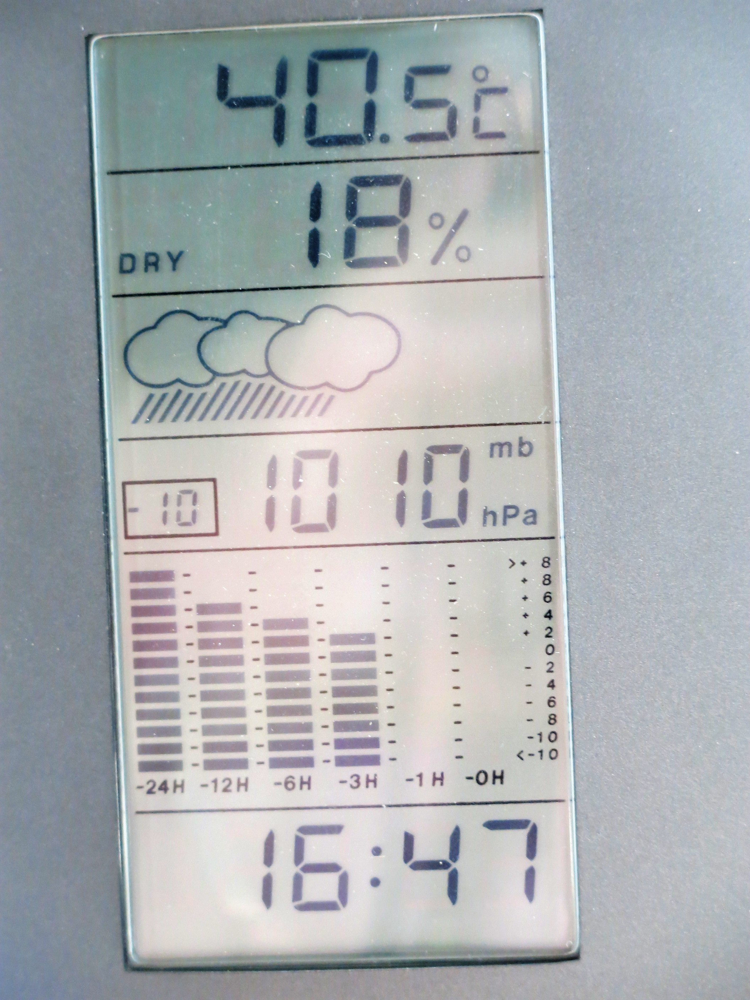

Executive Summary
On October 14, researchers at Leipzig University in Germany and the University of Exeter in the UK posted a paper to arXiv. Taking the record heat that occurred across global land through 2022, they rescored how well Google's probabilistic weather AI WeatherNext2 and the ECMWF IFS ensemble had each called it. The field's verdict had been running the other way. Several studies had reported that AI forecast models post good aggregate scores yet fall behind physics-based models on extreme events. This article follows how that verdict came apart.
At 72 hours of lead time, WeatherNext2's Brier skill score sat 24% above the IFS ensemble. What changed was neither the models nor the data but the scoring. Earlier work had matched deterministic forecasts against each other, each issuing a single value, and the authors read that comparison as lining up forecasts that were never aiming at the same thing. The advantage did wobble depending on what was used as the answer key, and the authors wrote that wobble into the paper itself.
Sections 1 through 4 follow what the paper states. Section 5, which carries the result over into the wider argument about model performance, is this article's reading.
Key Figures
Source: Wessel et al., arXiv:2610.20519 (October 14, 2026).
24%
Skill gain on record heat forecasts
Brier skill score at 72 hours against the IFS ensemble. The 90% interval runs 23-26%
39-45% → 9-17%
Records above every ensemble member
Observed records that rose above every forecast member. IFS first, WeatherNext2 second
5,778
Stations used for a direct recheck
HadISD surface observations. On record forecasts WeatherNext2 gained 10% at 72 hours and 19% at 84 hours
One year, one variable
The scope the authors state
Operational forecasts for 2022, 2 m temperature alone. Whether it carries to other combinations is unknown
ECMWF's Ensemble Misses Four in Ten Record Heat Events
Start with what was measured and how. The material is one year of operational forecasts from 2022, and the space is global land cut into a 0.25-degree grid. The forecast variable is 2 m temperature, nothing else. Lead times run from 12 hours to 120 hours in 12-hour steps, ten of them. Forecasts issued three days out and five days out were scored separately.
What counts as an extreme was nailed down in advance as well. The reference is a quantile drawn from ERA5 climatology for 1979 through 2017, and it differs by grid cell, by month and by forecast hour. A July afternoon in Seoul and a January night in the Sahara cannot be held to the same temperature. A record means a value above the highest in that reference period. Picking thresholds after the events are known would let a study steer its conclusion, so the authors fixed the thresholds first and only then began scoring.
The result tilted one way. At 72 hours of lead time, WeatherNext2 scored a Brier skill score of 24% over the IFS ensemble on record-breaking events. The 90% confidence interval of 23-26% is narrow. Lowering the bar to heat around the 90th percentile gives 23%. Switching to CRPS, which scores probabilistic forecasts as a whole, points the same way, with a 25% gain at the same 72 hours and a 90% interval of 24-25%. The gap widens as lead times shorten. Skill scores for the probabilistic AI models run around 30% at 12 hours and settle to 14-18% by 120 hours.
One further number reads more directly than the scores. It is the share of observed records that came in above every member of the forecast ensemble. However many ensemble members were run, even the hottest scenario among them fell short of what happened, which amounts to a missed alarm. For the IFS that share was 39-45%. Four in ten record hot events happened outside the range the forecast allowed for. The same figure was 9-17% for WeatherNext2 and 11-21% for WeatherGen, and 9-16% for EMOS, which statistically recalibrates the IFS ensemble.
Whether the probabilities in the tail were set correctly got its own check. The occurrence ratio, which measures over- and underprediction, stayed close to one for WeatherNext2 at every threshold and sat around 0.97 in the record range. WeatherGen runs a little under one at 0.94-0.96. For the IFS, a ratio of 1.14 at the 90th percentile climbs to 1.48 for records. The rarer the event, the more clearly the system puts the odds of it too low.
Why the IFS ensemble missed records that often shows up in how wide the ensemble spreads. Measuring the ratio of ensemble spread to actual error, the IFS sits at 0.65-0.7 at short lead times and only reaches about 0.88 by 120 hours. This is the underdispersion numerical models routinely show on surface temperature. When an ensemble opens narrower than the real uncertainty, the hottest member inside it falls short of the actual record more often. The probabilistic AI models and the post-processed forecast held the same ratio near one, and splitting the results by spread shows the calibration holding up into the wide-spread cases as well. Probabilities stay trustworthy, that is, even where the situation is unsettled. WeatherGen is the exception, retaining some underdispersion where it spreads widest.
WeatherNext2 was not the only model on the scoring table. Google's diffusion-based probabilistic model WeatherGen took 21% under the same conditions, with an interval of 20-22%, and EMOS beat the IFS too at 14%, with 13-15%. Anything on the probabilistic side came out ahead, which is hard to explain as one model getting lucky. The same goes for WeatherNext2's margin, which holds nearly flat at 22-24% wherever the threshold is set.
EMOS is not a newly built model. It is the IFS ensemble itself, statistically recalibrated. The authors fitted a Gaussian EMOS for each grid cell and each lead time on IFS ensemble forecasts from 2018 and 2019, then applied it to the 2022 forecasts. Real forecasting agencies do not ship the raw ensemble but run it through post-processing, so the intent was to put up an opponent closer to operational reality. That makes the 14% read a little differently. Post-processing alone lifts the raw IFS by 14%, and another 10 percentage points to WeatherNext2 remain beyond that.
On missed records the point lands harder. The post-processed IFS drops from 39-45% to 9-16%, standing almost level with the probabilistic AI models. The possibility of record heat was not simply absent from the ensemble the physics model produced. A considerable part of the gap opened because the probabilities that ensemble issued were scored without being refined.
Why the Earlier Verdict Went the Other Way
This field already holds a strong report pointing the opposite direction. A study in the journal Science Advances concluded that physics-based models forecast record-breaking events better than AI does. The models on the table then were deterministic ones such as GraphCast, Pangu-Weather and FuXi, and the opponent was HRES, the ECMWF's single high-resolution forecast. The explanation that followed was that AI cannot extrapolate to values it never saw in training.
What Wessel and colleagues take issue with is not the conclusion but the design of the comparison. The value a deterministic AI model trained on mean squared error produces is the conditional mean of the predictive distribution. It marks the center of mass of thousands of possible futures, a value trained from the start not to run to the extremes. HRES, by contrast, is the result of integrating the physical equations once all the way through, which is to say one realizable scenario. In the authors' phrasing, setting those two against each other confounds the type of forecast with the quality of the forecast.
Ask something trained to hit the average to call the hottest day and of course it will not. That is not the model falling short but the target being different. So this study matched the targets first and scored again. It used probabilistic models that issue a full distribution, and switched the scoring to metrics built for probabilistic forecasts.
WeatherNext2, the model that went on the scoring table this time, is one Google released in November 2025. It uses an architecture called a functional generative network to produce a full 64-member ensemble in a single forward pass. Inference runs eight times faster than the diffusion-based generation before it, by Google's account at release. That it issues a distribution rather than picking a single value is what decides matters in this study.
The abstract closes briefly. Many of the limitations reported for AI forecasting stem from unsuitable verification choices, and a fair evaluation of extremes requires probabilistic verification. Nothing about the models changed. The ruler changed, and the ranking turned over.
Change the Answer Key and the Ranking Wobbles
Scoring needs more than a ruler. It needs an answer key. Even what the temperature in Seoul actually was yesterday shifts a little depending on how the observations are woven together. What this paper used as the answer key for its main results is HRES-fc0, the initial state after data assimilation. Alongside the note that this follows standard practice in evaluating AI forecasts, the authors say why they did not use ERA5. Scoring a model trained on ERA5 against ERA5 hands that model an unfair advantage.
Evidence that the worry is not idle sits inside the same paper. Rescored against ERA5 as the answer key, the advantage of the operational AI models turns uneven from metric to metric. They still lead the IFS on CRPS, but the gain disappears once the threshold is raised. GenCast, trained on ERA5, runs far ahead of the IFS across every threshold under ERA5 and falls back once the answer key returns to HRES-fc0. The authors' diagnosis is plain. AI forecast models inherit the biases of the data they learned from, and which model beats the IFS depends on that training data.
Ensemble spread tells the same story. Put ERA5 in as the answer key and both operational AI models come out strongly underdispersed, their ratio of spread to error dropping to the level of the IFS. It is the very value that read as well calibrated, sitting near one, under HRES-fc0. Neither the models nor the forecasts moved, yet switching the answer key alone splits one number into "well calibrated" and "too narrow."
How far apart the two answer keys sit is on the page as well. Of the events ERA5 judged to be records, only 51% register as records in HRES-fc0, and in the other direction 40% of HRES-fc0 records are also records in ERA5. Across 2022, ERA5 counts 622,799 record-breaking cases and HRES-fc0 counts 795,818, of which 317,268 coincide. Set against the same year and the same planet, in other words, the two lists of broken records overlap by roughly half. Where HRES-fc0 catches more records is over mountainous regions and along coastlines.
So the paper puts up three answer keys and asks the same question three times. HRES-fc0, ERA5, and surface station measurements that passed through no model at all. The three answer this way.
| Answer key | Who comes out ahead | What to watch when reading it |
|---|---|---|
| HRES-fc0 (main result) | The operational AI models lead the IFS at every threshold | Produced by the same system as the IFS, so it does not take the side of models trained on ERA5 |
| ERA5 | Results split by metric, and the gain disappears at high thresholds | GenCast, which was trained on ERA5, runs furthest ahead here |
| 5,778 surface stations | The operational AI models lead the IFS once again | Direct measurements that never went through a reanalysis, which puts them furthest from training-data bias |
Source: Wessel et al. (2026). In the station verification, WeatherNext2 improved the Brier score for records by 10% at 72 hours and 19% at 84 hours, and WeatherGen by 7% and 16%.
The heaviest of the three answer keys is the third. Measurements from 5,778 HadISD surface stations never passed through a reanalysis model, so they have no reason to favor either side's training data. That the operational AI models led the IFS on extremes there as well is what holds this conclusion up. The line the abstract gives in passing, that station observations confirm these results, is in fact the best-defended ground in the paper.
How Far Should You Trust This Conclusion?
The authors answer that first. For a paper about verification, the lines they drew around their own conclusion are closely spaced.
- • This is not a local impact assessment — it is a global result set against analysis data on a 0.25-degree grid. The harm a heatwave does usually turns on a far narrower area
- • EMOS is only a proxy baseline — post-processing at an actual weather service is far more involved and carries forecaster judgment
- • The IFS was evaluated in its 2022 configuration — the operational system has been updated since. Whether other combinations of physics-based and AI models give the same result is not something this paper answers
- • One year, one variable — operational forecasts for 2022 and 2 m temperature alone. Results at individual grid points depend heavily on what actually occurred that year
- • Beyond the record remains an open question — for rarer high-impact events such as tropical cyclones or extreme precipitation, small samples unsettle statistical evaluation itself. Whether AI forecast models can predict events beyond the historical record is left unresolved
The last item is worth reading on its own. It means the objection from section 2, that AI cannot extrapolate beyond its training data, was not closed by this paper. What this study showed is that probabilistic AI models called events above a record line fixed by past climatology better than the IFS did. Whether the same holds when an event lands in territory observations have never reached is something the authors did not answer.
What the paper did see inside that narrow range is set out sharply in one case. It is the passage laying out forecasts for London, Paris and Brussels valid at noon on July 19, 2022.

In London, every model issued much the same forecast as far out as 108 hours. They began to separate as the event drew closer. As lead times shortened the IFS ensemble gathered below the observation, and at 36 hours and again at 12 hours every member sat under the actual temperature. At the same points the AI models, WeatherGen in particular, were keeping substantial probability near the observed value. In Paris every model caught the event, but the AI models converged on the actual value earlier, and WeatherNext2's distribution grew markedly sharp at short lead times. In Brussels the AI models ran high at first and then corrected, while the IFS and EMOS ran low at every lead time shown.
Why Pebblous Is Watching This Study
What we take from this paper is not the weather. Is the performance bad, or is the measurement bad? Cases that put that question this cleanly are not common.
For several years the claim that AI forecasting is weak on extremes has been in circulation. It was not without grounds. The experiments reproduced, the numbers held, and the explanation sounded right. Anyone who works in machine learning will nod at the idea that a model cannot extrapolate past the values in its training data. Yet what it took to bring that claim down was not a better model but a different scoring sheet.
Working on the data quality side, you meet the same shape often. A report arrives that some model is scoring badly in the field, and the first urge is to go work on the model. That the labeling criteria were out of step with the task, that the evaluation set differed from the real distribution, that the metric was measuring something other than what anyone wanted measured, comes to light much later. The money and time spent in between do not come back.
When you read an argument about AI performance, there are three things to ask first.
- • Are the two models aiming at the same thing — line up a model that issues an average with one that issues a single scenario, and there is no telling what the resulting number means
- • Where did the answer key come from — when the data used for scoring overlaps one model's training data, that model gains. Switching the answer key in this paper shook the ranking, which is that effect in the flesh
- • Was it confirmed against the most independent data available — in this study that role fell to measurements from 5,778 stations. Looking first for data that went through no intermediate processing is the faster route
One thing to add. This paper's conclusion also rests on a single scoring design in the end. That is probably why the authors set their limits down first. If someone poses the same question with another year, another variable, another answer key, another answer may come back. That does not make this result matter less. The lesson the paper leaves is the fact itself, that one scoring method can turn a conclusion over whole.
Editor's Note
Sitting in a meeting over a model scorecard at a customer, it is not unusual to find that nobody in the room can say what the metric is measuring. The numbers are crisp to three decimal places, and where the answer key behind them came from is anyone's guess. If a few years of conclusions hung on one scoring method even in a field where lives are at stake, our own metrics are worth doubting more often.
Thank you for reading this far. The original is at arXiv:2610.20519, and the figures and quotations here were checked directly against the body of that paper. If you have ever changed a metric or an answer key in an internal model evaluation and watched the conclusion move, we would be glad to hear what you changed and how.
Pebblous Data Communication Team
October 18, 2026
References
Academic Papers
- 1.Wessel, J. B., Spuler, F., Ferro, C. A. T., Kretschmer, M., & Sippel, S. (2026). "Probabilistic AI models outperform numerical weather prediction models on record breaking heat extremes." arXiv:2610.20519.
- 2.Zhang, Z., Fischer, E., Zscheischler, J., & Engelke, S. (2026). "Physics-based models outperform AI weather forecasts of record-breaking extremes." Science Advances, 12(18).
Industry & Official Sources
- 3.Li, A. (2025). "WeatherNext 2 is Google's most accurate forecasting model, now used by Pixel Weather & Search." 9to5Google.
- 4.Google DeepMind and Google Research. "WeatherNext 2." Google for Developers.